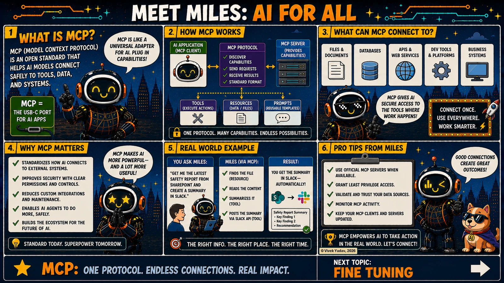

30 Days of LLMs in Travel Demand Modeling
An open research journal exploring whether large language models can improve existing travel demand models or help us rethink them entirely.
Latest: Day 00: Why 30 Days of LLMs in Travel Demand Modeling?
I am Vivek Yadav, a transportation modeler exploring human travel behavior, computational modeling, and the intersection of artificial intelligence and transportation planning.
This is my little corner of the internet where I share research, experiments, technical ideas, and things I am curious about.
An open research journal exploring whether large language models can improve existing travel demand models or help us rethink them entirely.
Latest: Day 00: Why 30 Days of LLMs in Travel Demand Modeling?
0 of 30 entries published
Exploring how language models can represent individual travel decisions and human behavior.
Trip-based, tour-based, hybrid and activity-based modeling methodologies.
Exploring intelligent agents, model diagnostics, calibration and validation.
Synthetic populations, virtual cities, agent-based simulations and emerging modeling methodologies.
In progress.
Exploring whether an intelligent agent can assist activity-based model calibration by diagnosing gaps against observed targets and proposing adjustments.
Investigating whether large language models can represent individual travel decisions in a way that is useful for travel demand modeling.
A concept for a small synthetic town populated by simulated travelers, as a sandbox for testing new modeling ideas.

Meet Miles: AI for All
Meet Miles, my friendly robot who explains artificial intelligence through comics.
Latest comic
An open standard that helps AI models connect safely to tools, data, and systems.